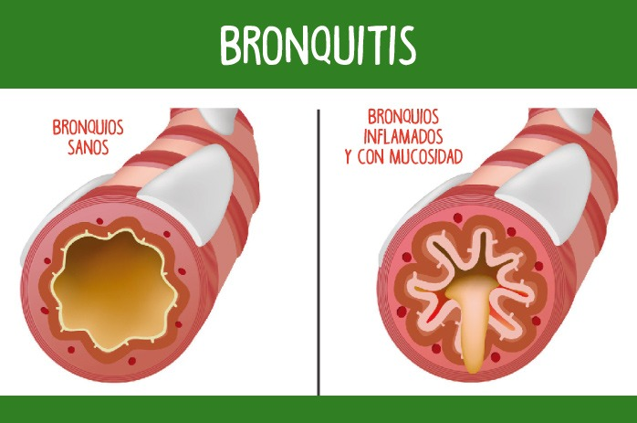

Bronquitis
Descripcion
La bronquitis es la inflamcion del revestimiento de los bronquios, que son los conductos que transportan el aire hacia y desde los pulmones.
Causas
Puede ser causada por infecciones virales, infecciones bacterianas, irritantes ambientales, tabaquismo o condiciones de salud preexistentes.
Sintomas
- Tos persistente
- Produccion de mucosidad
- Malestar en el pecho
- Dificultad para respirar
Pruebas y examenes
El diagnostico de la bronquitis se basa en una combinacion de historia clinica, examen fisico y, en algunos casos, pruebas adicionales.
Tratamiento
Broncodilatadores, antibioticos, corticoides inhalados, hidratacion, reposo y analgesicos.
Expectativas
La bronquitis aguda generalmente se resuelve en un plazo de 7 a 10 dias, aunque la tos puede persistir entre 2 y 3 semanas. La bronquitis crinica, por otro lado, es una afeccion mas persistente y puede requerir un tratamiento continuo y un enfoque de rehabilitacion pulmonar.